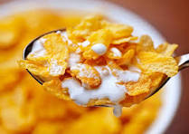

Corn Flakes
Corn flakes, or cornflakes, are a breakfast cereal made from toasting flakes of corn (maize)...
Originally invented as a breakfast food to counter indigestion, it has become a popular food item in the American diet and in the United Kingdom where over 6 million households consume them.
History
The cereal, originally made with wheat, was created by Will Kellogg in 1894 for patients at the Battle Creek Sanitarium... A patent for the process was granted in 1896.
Description
A 360-degree panorama capturing the interior of a cornflakes bag: View as a 360° interactive panorama
{kind=link}

Related Articles
Bran Flakes
Bran flakes is a type of breakfast cereal similar to corn flakes...
It consists of small toasted flakes of wheat or oat bran... Research suggests that eating commercially produced raisin bran containing sugared raisins elevates dental acids...

Bran flakes are high in dietary fiber... It can also promote a healthy microbiome.

Coconut Butter
Various parts of the coconut are used to make different coconut-based products...
Health Benefits
- Contains lauric acid that supports cholesterol management
- Aids in weight loss through metabolism boosting
- Boosts immunity with antiviral properties


Peanut Butter
Peanut butter provides a good amount of protein and essential vitamins...
Nutritional Benefits
Contains protein, magnesium, phosphorus, zinc, niacin, and vitamin B-6...
Health Benefits
- Weight management support
- Heart health improvement
- Blood sugar regulation